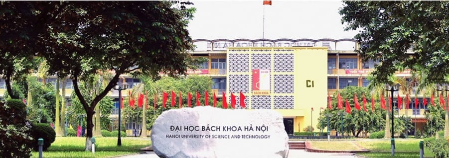
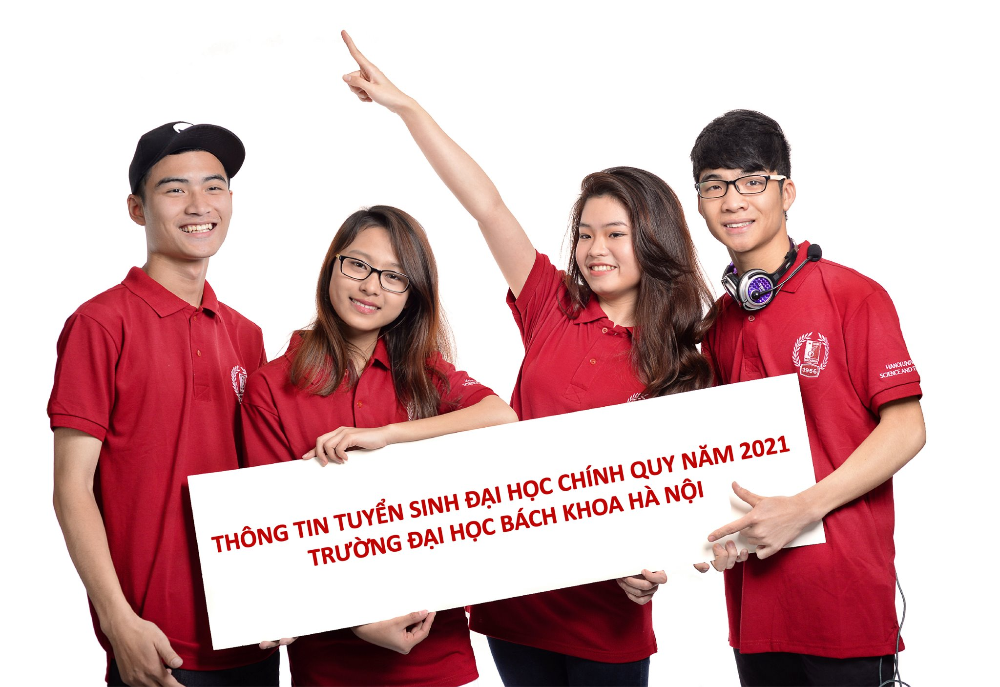
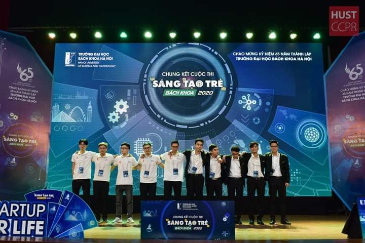
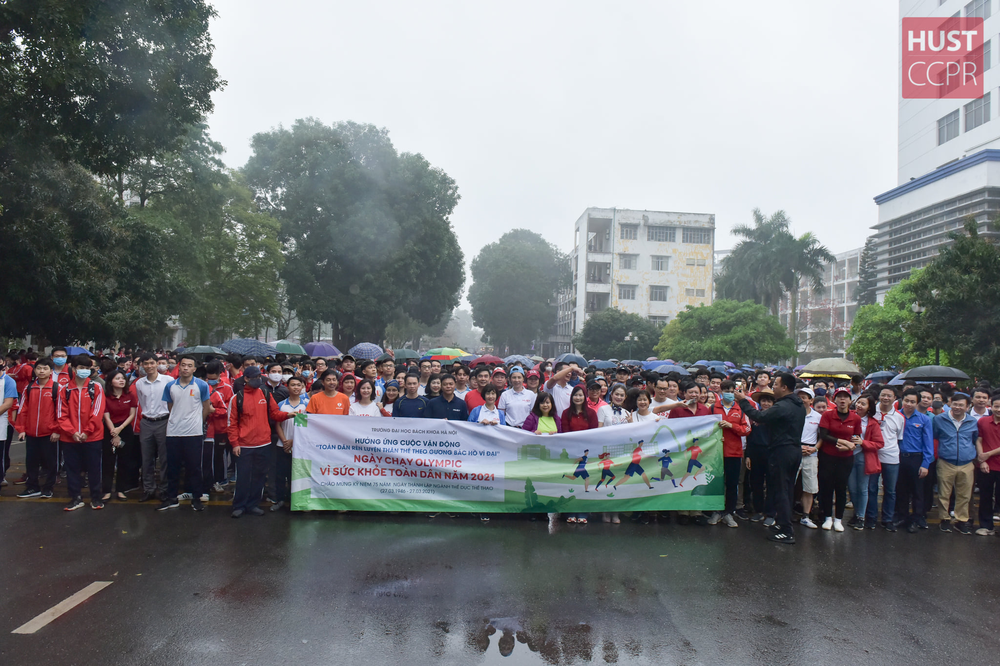
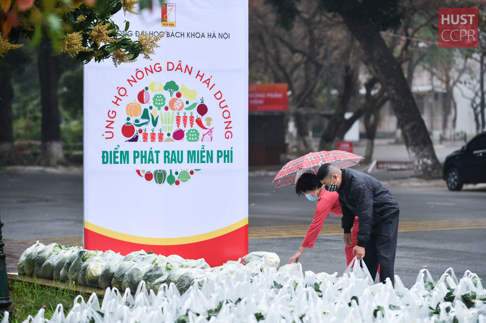
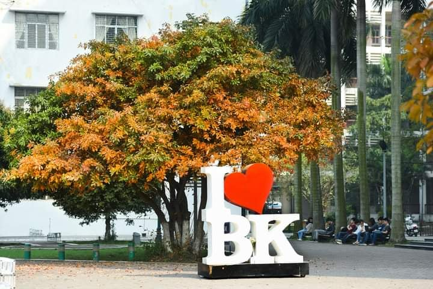

-

Thông tin tuyển sinh hệ chính quy năm 2021
Ngày 31/3/2021, Trường Đại học Bách khoa Hà Nội chính thức công bố
thông tin tuyển sinh ĐH hệ chính quy năm 2021.
Các em thí sinh và phụ huynh có thể tìm hiểu các thông tin hướng dẫn chi tiết về phương thức
tuyển sinh; Các mốc thời gian cần lưu ý; Các ngành/chương trình đào tạo, mã xét tuyển và chỉ
tiêu dự kiến; Mã tổ hợp xét tuyển; Thông tin về Kỳ thi đánh giá tư duy tại đây.
-

Cuộc thi sáng tạo trẻ Bách Khoa 2020 đã tìm ra nhà
vô địch
Sau hơn sáu tháng kể từ vòng loại cuộc thi, từ những ý tưởng vô cùng
sơ khai ban đầu, chúng ta đã tìm ra sáu cái tên xuất sắc đi đến vòng
chung kết. Cuộc thi chung kết hôm nay đã diễn ra rất tốt đẹp. Xin chúc
mừng tất cả các đội thi.
-

Ngày chạy Olympic vì sức khoẻ toàn dân năm 2021
Nhân kỷ niệm 75 năm ngày Thể thao Việt Nam (27/3/1946 - 27/3/2021)
và hưởng ứng phong trào toàn dân tập thể dục, Trường Đại học Bách khoa Hà Nội
tổ chức chạy hưởng ứng phong trào rèn luyện thể dục thể thao nhằm nâng cao sức khoẻ
phục vụ cho công tác giảng dạy và học tập của cán bộ và sinh viên.
-

Hỗ trợ tiêu thụ nông sản cho Bà con nông dân Hải Dương
Hưởng ứng lời kêu gọi của Tỉnh ủy, UBND tỉnh Hải Dương
về việc hỗ trợ tiêu thụ nông sản cho Bà con nông dân Hải Dương
trước tình hình dịch bệnh Covid-19 đang có nhiều diễn biến phức tạp,
Trường Đại học Bách khoa Hà Nội đã quyết định hỗ trợ thu mua nông sản
cho bà con và phát miễn phí cho cán bộ viên chức, nhà giáo, người lao động trong toàn Trường.
-

Đại học Bách khoa Hà Nội tiếp tục triển khai học onlime
Đại học Bách khoa Hà Nội, trong muôn ngàn nỗi nhớ, trong hàng vạn lý do để yêu,
có lý do bốn mùa thời tiết với hàng chục loài hoa đua nhau bừng nở, khoe sắc khiến cho ngôi trường
khoa học kỹ thuật số 1 Việt Nam trở nên thơ mộng, mơ màng. Liệu năm nay chúng ta có bỏ lỡ Bách Khoa mùa
lá rụng?